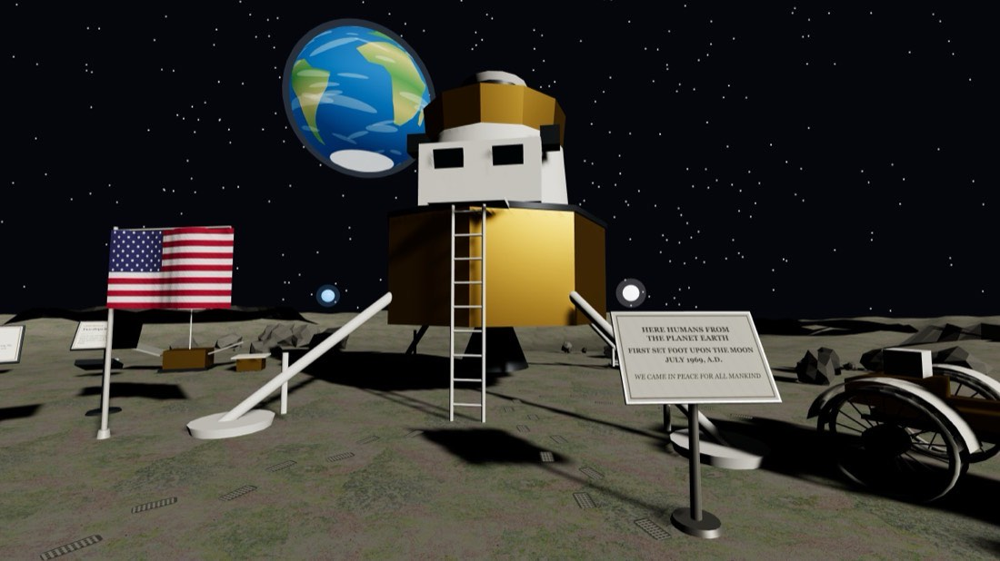
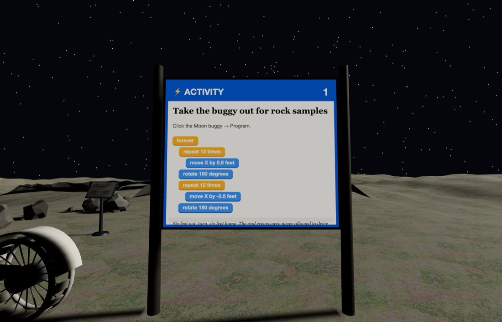
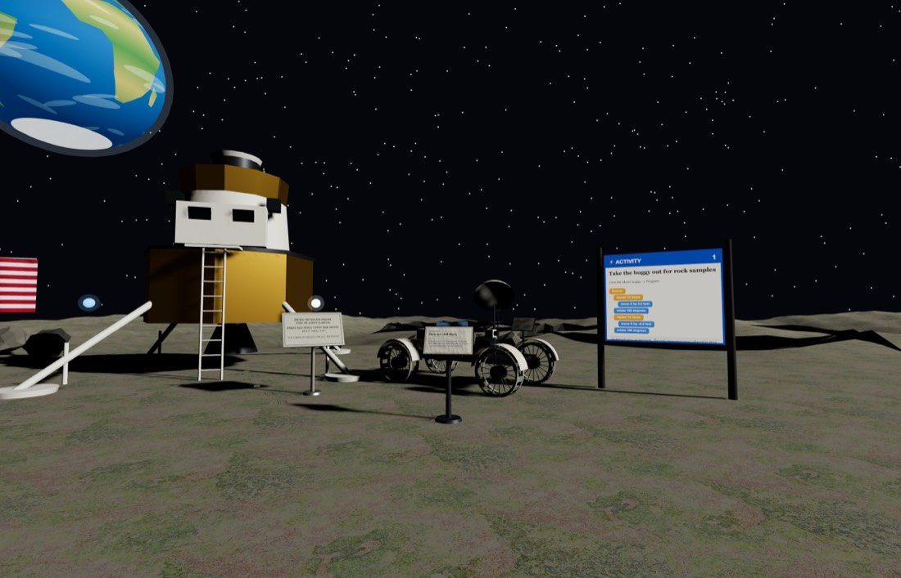

🌙 The Moon
Tranquility Base, at real size — and a sky that stays black at noon.
Getting there: open Edusim, tap ☰ Menu → Load World → The Moon. You will be set down at the front gate. Look for the bright ⚡ ACTIVITY boards — there are two of them.



Quick starts — do these first
Both of these are printed on boards inside the world too, so you can leave this card at home. Click the object, choose Program, drag the blocks together in this order, then press Save.
Take the buggy out for rock samples
Click the Moon buggy → Program
- forever
- repeat 12 times
- move forward 0.5 feet
- rotate 180 degrees
- repeat 12 times
- move forward -0.5 feet
- rotate 180 degrees
💡 Six feet out, turn, six feet home. Real crews were never allowed to drive further than they could walk back if the buggy broke down — so keep your loops short.
Set the Earth turning
Look up, click the Earth → Program
- forever
- rotate 0.5 degrees
💡 From here the Earth never rises and never sets — the Moon keeps one face toward us, so it just hangs there. It does still turn, though: one full spin every 24 hours.
Then try these three
-
One-sixth gravity hop
Make the lunar module bounce gently. On the Moon you weigh a sixth of what you do at home, so things come down slowly — see if you can find timings that feel like low gravity.
- forever
- repeat 8 times
- move up by 0.3 feet
- wait 0.08 seconds
- repeat 8 times
- move up by -0.3 feet
- wait 0.08 seconds
-
Rover convoy
Duplicate the buggy twice, then give each copy a different wait so they set off at different speeds. Which one gets home first, and why?
- repeat 2 times
- duplicate 8 ft away
-
Solar tracker
The habitat's solar array should follow the Sun. Turn it slowly and work out how long your version takes to go all the way round. A real lunar day is 29½ Earth days.
- forever
- rotate 0.2 degrees
- wait 0.1 seconds
Block colours
- Control — repeat, forever, wait, when an object says, duplicate
- Motion — move forward, move up, glide, rotate, go back to start
- Looks — say, change size, set size, set opacity, change colour
One rule that catches everybody: move forward and glide follow the way the object is pointing, so a rotate in front of them genuinely steers — four sides and four 90° turns bring something back exactly where it began. move up is the exception: up is up whichever way a thing is facing.